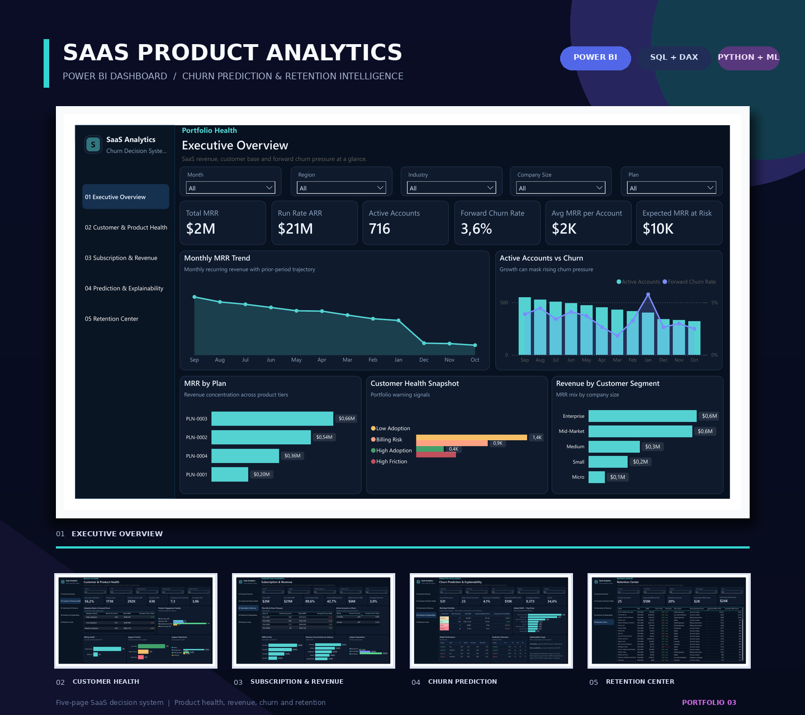

Point-in-time features
Build monthly account snapshots using only information observable at each snapshot date.
Python · DuckDB · SQL · LightGBM · SHAP · Power BI
Which active accounts are likely to churn in the next 30 days—and where should a capacity-constrained Customer Success team act first?
Product usage, subscriptions, billing and support each reveal only part of customer health. The project unifies these signals, predicts forward churn and converts model probability into revenue-weighted retention priorities.
A distribution-informed synthetic dataset covering accounts, users, plans, subscriptions, churn, invoices, payment attempts, product events and support tickets. Hidden generator states are excluded from downstream model features.
Build monthly account snapshots using only information observable at each snapshot date.
Train on the past, select on validation and lock the threshold before future-period testing.
Combine churn probability with MRR exposure and transparent action rules.

XGBoost and LightGBM were compared using validation Average Precision. LightGBM won; its validation-F1 threshold was frozen before evaluation on the future test period. Tree SHAP provides global model explainability.
MRR × churn probability better prioritizes accounts by expected recurring-revenue exposure.
Product-event volume, recency, feature usage, tenure and support behavior rank prominently in global SHAP results.
High precision limits false alarms, while lower recall means some churners remain undetected.